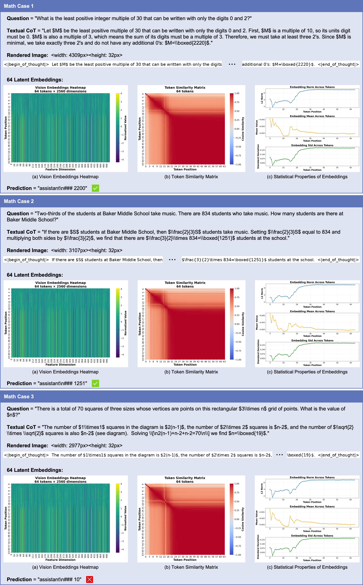
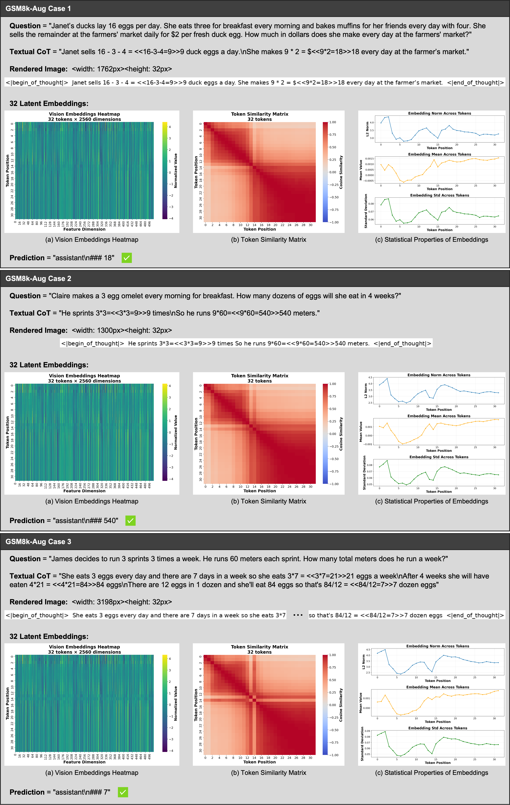
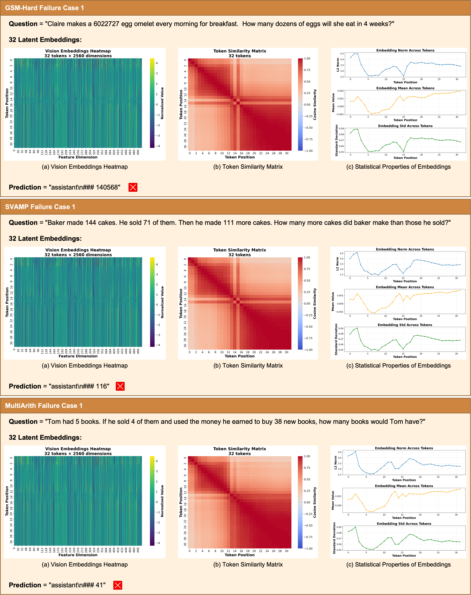

Render-of-Thought (RoT) introduces a paradigm shift in latent reasoning by visualizing the reasoning chain.
Instead of compressing Chain-of-Thought (CoT) into opaque vectors, RoT renders textual reasoning steps into images
and uses pre-trained vision encoders as semantic anchors to guide the reasoning process. This approach achieves:
3-4× token compression compared to explicit CoT
Significant inference acceleration while maintaining competitive accuracy
Interpretable reasoning through visual representations
Plug-and-play implementation without additional pre-training overhead
Overview
Introduction
Method
Key Features
🎨 Text-to-Image Rendering
Converts textual CoT steps into compact single-line images with dynamic width and fixed height.
🔗 Visual-Semantic Alignment
Aligns LLM hidden states with visual embeddings via a projection head, using pre-trained vision encoders as semantic anchors.
🚀 Two-Stage Training
Stage 1: Train projection head to align latent representations. Stage 2: Fine-tune language model head.
Training Pipeline
Experimental Results
Performance on Mathematical Reasoning

Figure 4: Performance comparison on mathematical reasoning benchmarks.
GSM8K-Aug Results

Figure 5: Results on GSM8K-Aug dataset.
Inference Time
Loss Curves
Decoding Strategies
Visualization Examples
Failure Case Analysis

Figure 10: Analysis of failure cases and error patterns.
Citation
@article{wang2026rot,
title={Render-of-Thought: Rendering Textual Chain-of-Thought as Images for Visual Latent Reasoning},
author={Yifan Wang and Shiyu Li and Peiming Li and Xiaochen Yang and Yang Tang and Zheng Wei},
journal={arXiv preprint arXiv:2601.14750},
year={2026}
}